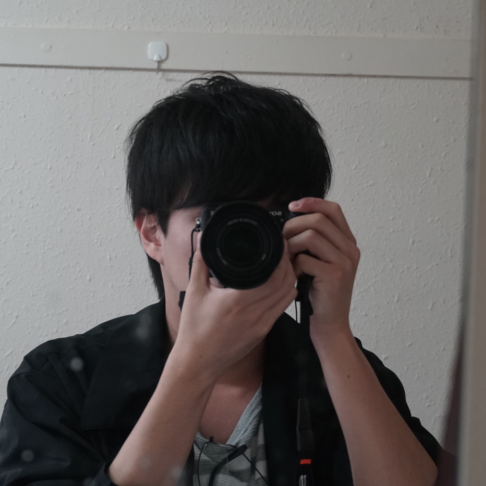

Awards
-
学生奨励賞一般社団法人 情報処理学会, 第196回HCI研究会, 2022-1.
-
茗溪会賞一般社団法人 茗溪会, 2021-3.
Exhibition
-
1/100展, 筑波大学春日エリア(つくば市, 日本), 2019-12.
-
平砂アートムーヴメント展示企画「ここにおいて みせる/みる」, 筑波大学 学生宿舎平砂9号棟(つくば市, 日本), 2019-5.
-
ひとりごとのカタチ/集合体についてmAstival, 筑波大学 総合交流会館, 2019-4.
-
MAD -創成x芸術合同展覧宴-, カフェヨン(つくば市, 日本), 2019-4.
-
KalfosBoxどこか遠くの場所で, 筑波大学アートギャラリーT+(つくば市, 日本), 2018-10.